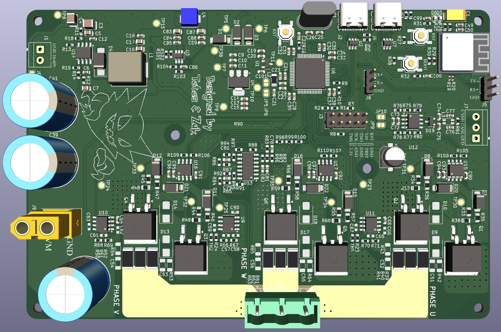
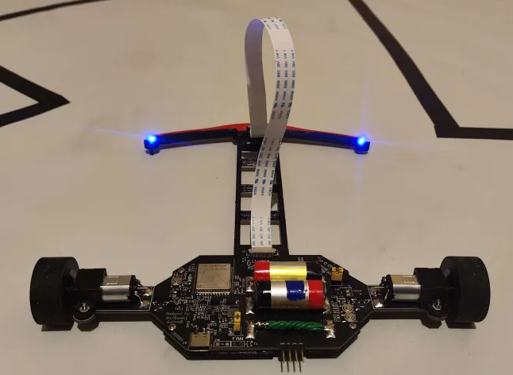
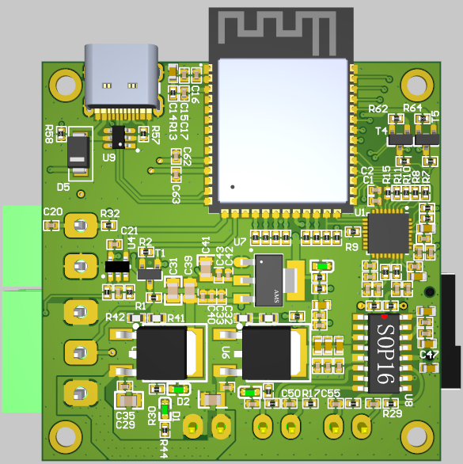
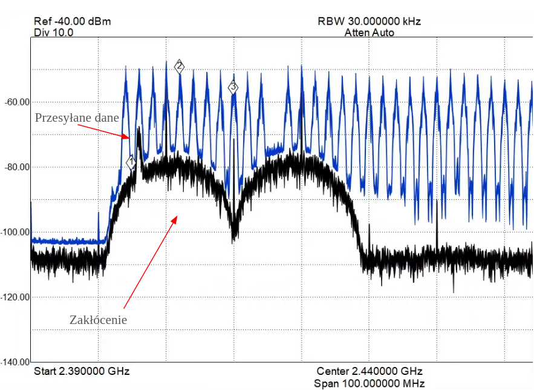
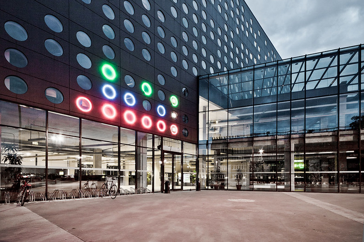

Work Experience
- Designed (PCB) hardware test fixtures to facilitate automated software testing and validation phases.
- Conducted EMC testing and root cause analysis, implementing hardware modifications to improve noise immunity and reduce emissions.
- Analyzed and validated DC/DC converters to verify power integrity and compliance with design specifications.
- Validated and debugged low-level communication protocols (I2C, SPI, UART, CAN, USB) using logic analyzers and oscilloscopes.
- Orchestrated the development of the Random Access (RACH) procedure for 5G RAN, leading a team through coding and verification phases.
- Validated the software solution via extensive simulations and successfully integrated the stack on live hardware, verifying real-time performance.
Education
Wrocław University of Technology
Wrocław, Poland
Degrees
- Bachelor's degree in Electronics
- Master's degree in Electronics
Skills
C, C++, Linux, Python, DSP, LVGL
SQL, QT, Matlab, VHDL, FreeRTOS
Tools
git, CMake, Makefile, Docker, JLink
VSCode, LTSpice, Altium, KiCad
Interfaces
CAN, UART, SPI/QSPI, I2S
ETH, I2C, USB, WiFi, BLE, ZigBee
1kW BLDC Motor Driver
Designed and prototyped a high-power custom PCB for a 1kW Brushless DC motor driver, utilizing the STM32G4 microcontroller for its advanced mixed-signal capabilities. Engineered the complete firmware architecture in Embedded C, implementing a Six-Step (Trapezoidal) commutation algorithm and a PID controller for precise closed-loop speed regulation. To ensure hardware safety and longevity, developed a software-based Soft-Start mechanism to mitigate inrush currents. The project is currently in the active development phase, with ongoing work focused on refactoring the control scheme to implement Field Oriented Control (FOC) for enhanced efficiency and acoustic performance.

Line Follower
Designed and engineered a fully autonomous Line Follower robot from the ground up as a Bachelor's Thesis project. The system architecture is based on the ESP32S3 microcontroller, running firmware developed in C++ on top of FreeRTOS to ensure real-time task management between motor control and wireless communication. The robot’s position is calculated using a custom reflective sensor array on the front bumper, feeding into a PID controller for precise trajectory correction. To solve the common challenge of manual tuning, I developed a companion desktop application in Python that communicates with the robot via a REST API. This allowed for real-time remote adjustment of PID coefficients without recompiling code. The development environment and tooling were containerized using Docker to ensure reproducibility and workflow efficiency.

CyberLej: Competitive Timing system
Executed the full-stack engineering of a standalone embedded device used for competitive social events. The project involved designing a custom PCB with the ESP32S3 microcontroller and integrating a suite of peripherals including a Touch Display, Audio Codec, and SD storage. To ensure the user interface was fluid and the audio lag-free, I wrote optimized low-level drivers from scratch, managing hardware registers directly rather than relying on heavy high-level APIs.

Analysis of EMI impact on wireless links
Designed and engineered a custom hardware-software testbench to evaluate the stability and latency of wireless protocols (Wi-Fi, BLE, ZigBee) under electromagnetic interference. I developed a dedicated transceiver based on the ESP32-C6 (RISC-V) SoC to support multiple standards on a unified hardware platform and implemented an industrial RS-485 interface for reliable control communication. The project involved writing optimized C++ firmware for real-time metric collection and creating a Python desktop application to automate test scenarios and visualize data. My research proved the superior robustness of Bluetooth Low Energy in high-interference environments due to its Adaptive Frequency Hopping mechanism, while identifying critical retransmission latency issues in Wi-Fi TCP.

Big Binary Clock
Developed a modernized hardware and software prototype to upgrade the iconic large-scale Binary Clock on the C-13 building at Wrocław University of Science and Technology. The system controls a massive display of 17 LED strips using a custom-designed controller running FreeRTOS. I engineered a robust time synchronization engine that fuses data from NTP (Network Time Protocol) and GPS to ensure millisecond-level precision and redundancy. A significant portion of the project involved developing a custom desktop control station using Qt (C++). This application communicates with the hardware via TCP using the LwIP stack, enabling granular control over every LED segment and facilitating remote firmware updates (OTA). The entire build environment was containerized with Docker and managed via CMake/Makefiles to ensure professional-grade code maintainability.

Pulseoximeter
Mini-Keyboard
8-bit RISC microprocessor
System for reflex testing using FPGA
CNN model for skin lesion detection